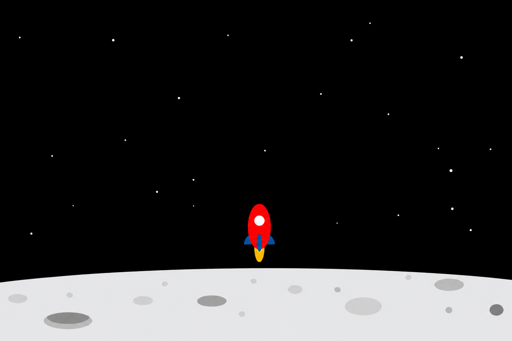
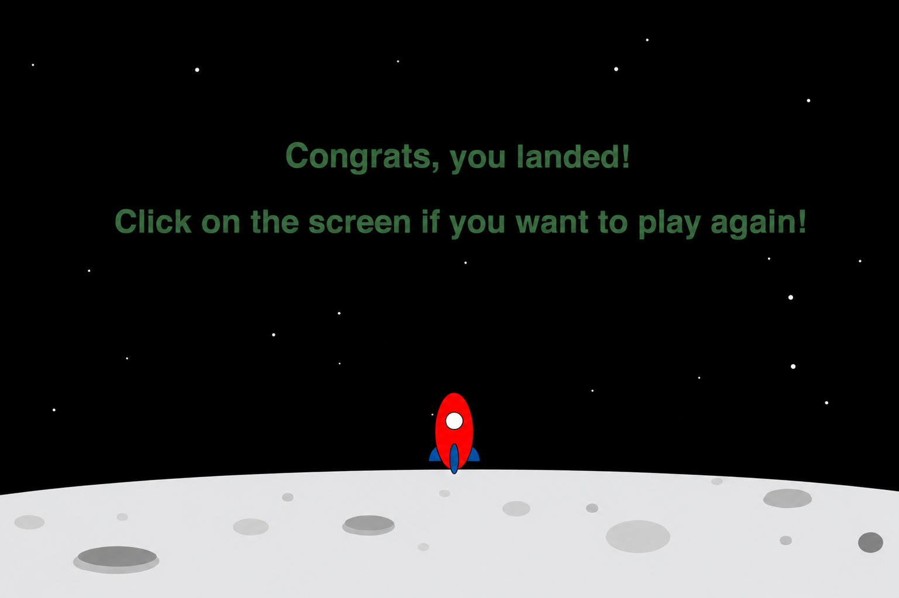
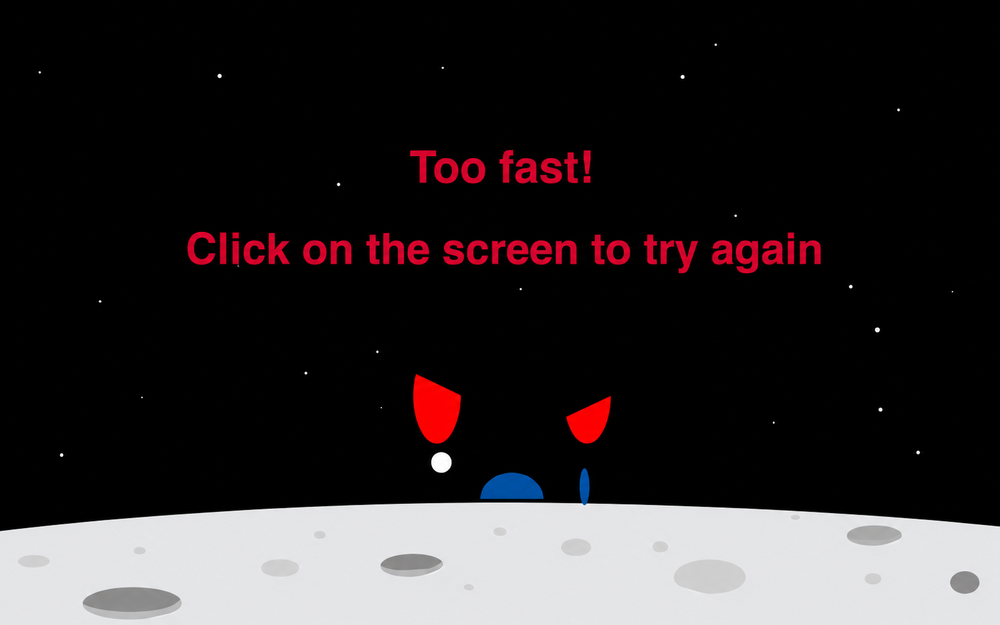

Ett webbaserat månlandningsspel byggt med JavaScript, Canvas API och p5.js. Styr thrust och bränsle för att landa säkert på månens yta innan gravitationen eller bränslet tar ut sin rätt.
Uppgiften var att bygga ett fullt fungerande spel från grunden, utan att luta sig på ett färdigt spelmotor ramverk. Utmaningen låg i att själv räkna ut all fysik, gravitation och kollision, samtidigt som spelet skulle kännas rättvist och roligt att faktiskt spela inte bara tekniskt korrekt.
Målet var ett spel där varje landning känns som ett resultat av spelarens egna val, inte slump, hur försiktigt man styr, hur man hushåller med bränslet och hur man läser terrängen.
Lunar Lander är ett skolprojekt där jag byggde ett webbläsarspel från grunden med JavaScript, Canvas API och p5.js. Spelaren styr en rymdfarkosts thrusters för att motverka gravitationen och landa säkert på ojämn månterräng, med bränsle som huvudsaklig begränsning.
Istället för att följa en mall byggde jag hela spelloopen, fysiken och renderingen själv från gravitations och thrust beräkningar till kollisionsdetektering mot terrängen. Resultatet är ett litet, fokuserat spel som faktiskt går att spela.
Jag ansvarade för hela spelet, från koncept till spelbar version. Här är vad det innebar i praktiken.
Ett urval av spelet i olika skeden.



Att bygga fysiken själv, utan ett färdigt spelmotor ramverk, lärde mig hur mycket som ligger bakom något som känns enkelt när man spelar det. Gravitation, thrust och kollision är lätta att förstå i teorin men svåra att få att kännas rättvisa i praktiken.
Projektet visade mig också värdet av speltestning som en riktig del av processen, inte ett sista steg, de flesta av mina bästa förbättringar kom från att faktiskt spela spelet om och om igen, inte från att läsa koden.